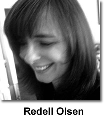
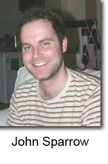

Voyage Into Geospace
Kate Fagan
How2 is now seven years old. Online poetry publishing and its labyrinthine worlds have morphed at warp speed during those years. Glancing over archived back-issues of How2, readers can literally trace the evolution of a publication medium that began to make it new during the 1990s, forever changing many people’s conceptions of writing practices and reading communities, aesthetics and place. How2 is one locally-global historical microcosm: what happened to innovative poetry when servers began to stream video and sound content? When the ‘new media’ of flash technology became the old media? When email permanently revolutionised the volume and nature of communication for a privileged percentage of the earth’s population? Virtual worlds are kind to experimental margins. But they can also reinforce the bedrock of conventional literary cultures by replicating some old-school mainstays of ‘proper’ literary undertaking: orderly reading methods, hierarchies of nation and language, dull insistence on criticism without argument, and poetry-as-real-estate.
It is exciting and vital to reflect on How2’s navigation of these cyclical dilemmas. While the cyberstorm thunders, some writers and artists are re-embracing production styles that are high-tech-low-fi, eluding an endless commodity circus by generating handmade rare objects — such as those appearing in this issue’s bookarts and small press publishing forums. Meanwhile, across our range of new writing features, poetical geographies are shaken at every turn. Susan Schultz and Mani Rao reconfigure notions of ‘the Pacific’ and ‘Indian innovation’ while ‘London calls’ to an alphabet of poets from across the Atlantic and around the world. Zhang Er in her selection of contemporary Chinese poetry in translation asks readers to acknowledge the poems as a series of “dialogues between interchangeable partners”:
Everything is open to everything else. “I” turns into you, he, she, it, we, they, etc. Time and space are “things” as well as other abstract thoughts and concepts. Things tend to know themselves better than humans, who are simply other “things.” The prepositional words used to position them, to pin them down, in turn become meaningless or even misleading. Is pan-perspectival the best word to convey this lack of a human-centered epistemological view? |
Zhang Er’s spatially smart term ‘pan-perspectival’ is a tough counter to the tendencies of mainstream media to homogenise culture, familiarise the strange, and stifle ideas that threaten in their difference. It is perhaps the task of transcultural internet communities to resist the wholesale export and influence of totalising logics, such as the violent consumerism propelling each of various war machines that are raging globally, and instead, to keep filamentine track of sites in which “everything is open to everything else”.
This issue of How2 — one localised voyage into geospace — is my last as editor. I am especially pleased we can include an unpublished interview with the inimitable and much-loved Barbara Guest alongside several articles and a memory bank celebrating Guest’s legacy. I am also delighted to have chosen the thematically disparate poems in ‘Outer Alphabet: 26’ entirely from unsolicited submissions. Such an open geospatial sweep is a momentary gauge of the journal’s reach, and suggests both the hope and eclectic necessity of How2’s project: countless different women continue to identify with How2 as a forum for innovation, outspokenness, experiment and community. Spatiality and placement emerge as core concerns for many poets in ‘Outer Alphabet’. During an era in which struggles to control ontological and ecological space are paramount, and bloody disputes for cultural territory have become the substance of daily public spectacle, this trend in critical thought is both inevitable and politically welcome.
Over the past six years I have worked closely on eight issues of How2. Special features on Gertrude Stein, Rosmarie Waldrop, Maggie O’Sullivan, Genevieve Taggard, Leslie Scalapino, Nicole Brossard, Alice Duer Miller, Joan Jonas, and the poetics of collaboration are just a few great memories of that time. Our translations broadened in scope to publish pioneer work from Italy, contemporary and modernist Japan, France and China. Echoing shifting tides, our ‘mixed media’ focus assumed ‘new media’ dimensions and showcased work from the U.K., Brazil, North America, Canada and Australia. I have been inspired constantly by the quality and concentration of poems, papers and reviews I’ve had the honour to read.
It has been a rare treat to edit How2 and to make friends with a stellar crew of co-editors, poets and artists along the way. Working with Redell Olsen and John Sparrow has been terrific and I thank them while looking forward with excitement to Redell’s editorship. How2 moved in 2005 to a single home at the Piper Centre at Arizona State University and adopted a simple new web-address. The journal had been resident since 1999 in two different places, with our archives at Rutgers University and the journal at Bucknell University under the guidance of Roberta Sims. Last year’s evolutions and transitions were thrilling and timely. They were accomplished thanks to the hard work of many people including John, Cynthia Hogue, Kathleen Fraser, Robert Hampson at Royal Holloway in London, and the Piper Centre team. John’s expertise has allowed an elegant redesign of the HOW(ever) and How2 archives — please visit them! I would also like to thank Roberta and Ann Vickery, with whom I worked in detail on earlier issues, and How2’s Editoral Advisory Board, particularly Kathleen, Cynthia, Susan Schultz, Sawako Nakayasu and Jeanne Heuving, who have been especially helpful during my time as editor. Thank you to the dozens of guest editors and hundreds of contributors who have made this job a labour of true love and surprise. And most importantly, a hugely appreciative thanks to How2’s scores of dedicated readers. Poetry and imagination are in your hands.
Kate Fagan
Sydney, July 2006
|
Editor:
|

|
Managing Editor:
|
 |
Webmaster: John Sparrow john[dot]d[dot]sparrow[at]gmail[dot]com |

HOW2 Internet Address (Bookmark it!):
http://www.how2journal.com
Editorial correspondence may be e-mailed to:
kfag6311[at]mail[dot]usyd[dot]edu[dot]au
Review copies of recent books may be sent to:
Kate Fagan
26 Iredale street
Newtown, NSW 2042
Australia
Masthead (Editors & Associate Editors)